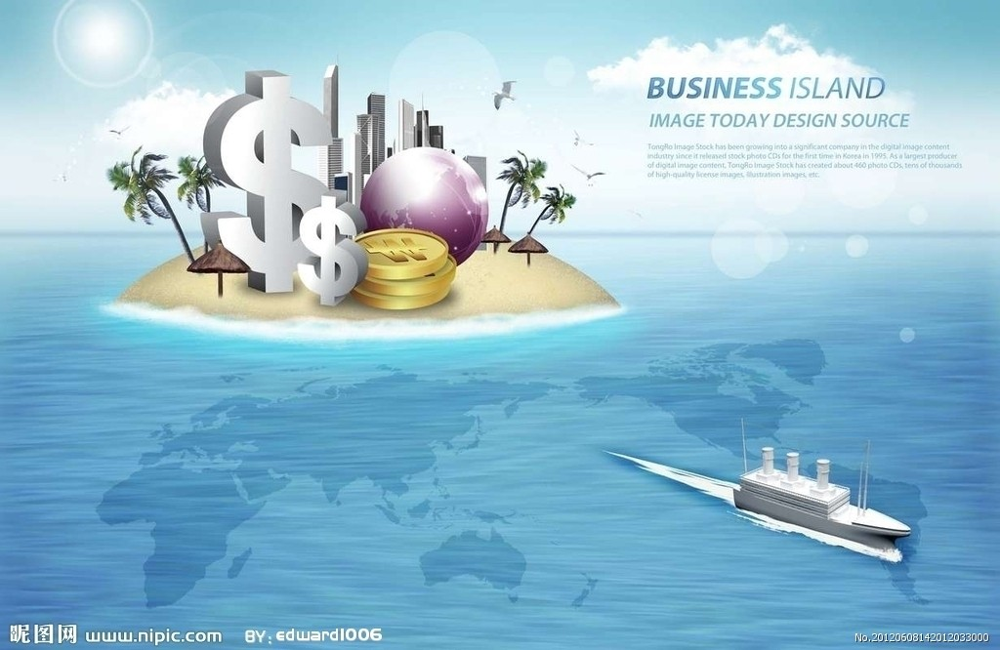

 今年初举办的巴黎Maison et Objet家居装饰博览会为全年的室内设计风格确定了风向标。展会在巴黎北部世博园(Parc des Expositions)的九个大展厅内举行，在为期五天的展览中，共有3194家参展商参会，吸引访客8.3万人。 今年的展会主题是“制造”，以回应对家居产品设计制作整个过程的越来越多的关注——从操作转轮的陶工到数字环境中的工程师。在本次博览会举办的灯展中表现得尤为明显，最新的节能灯技术被巧妙地设计进诸多产品中。 在加拿大Bocci公司的展台前，欧迈•阿尔贝尔(Omer Arbel)设计的全新触摸式产品——73 节能灯——犹如空中飘浮的云朵。“我们着迷于制作全新产品的方法，而不是新产品本身。”他说。“通过制作73节能灯，我们掌握了如何把高温玻璃转变成抗高温陶瓷纤维的先进技术，玻璃成品不仅呈现出形状，而且还显露出织物的纹理结构。” LED光源被放置在73节能灯内，然后收拢起吊灯，长长的吊灯错落有致，营造出云朵的效果。它比树形吊灯更为灵便，整件灯具更似一件高级定制的艺术品。 伦敦Ochre公司也成功地把节能灯打造成艺术品，它们制作的Seed Cloud大型组合吊灯就如同一件雕塑装置。从每个铜质吊头悬挂一个立体玻璃小圆球，微小的LED光源通过它得以大幅放大。“这就好比给玻璃安上了铜质眼睑，”联合创始人乔安娜•毕比(Joanna Bibby)说。“手工制作的产品，不可能有规模化生产的感觉。” Wonderglass是一家成立时间不长的伦敦灯具公司，它由来自意大利的一对父子莫瑞吉奥与克里斯蒂安•莫萨蒂(Maurizio and Christian Mussati)创办，旨在用创意十足的产品激发“神奇”效果。过去一年，公司推出了强调设计的树形灯系列：约翰•帕森(John Pawson)的Sleeve灯、克莱松•卡尔维斯托•卢恩(Claesson Koivisto Rune)设计的Grappa灯以及扎哈•哈迪德(Zaha Hadid)设计的Luma灯。 田村奈惠(Nao Tamura)制作的The Flow灯使用棕色威尼斯玻璃材质，并设计成城市建筑物水中倒影模样。天蓝色与绿色瀉湖款目前有售，今年the Flow [T]还推出了自己的白色款式。 打造带有超强剪影的灯具是汤姆•狄克逊(Tom Dixon)的拿手绝活——他是多盏吊灯及运用铜材的流行时尚引领者。他的Plane吊灯摆弄出极简主义造型与几何图形——从任何一个角度欣赏，永远是实心球的模样。狄克逊的Beat灯具系列设计成各种不同高度的悬挂式吊灯束，宛如美仑美奂的风景画。铜灯由印度北部的能工巧匠手工延展锻造而成。今年推出的灯具系列将使用哑灰色。 在法国公司Le Deun的展台上，美不胜收的Micro球形灯与新推出的梳妆镜由镜框内侧的LED条灯照射，煞是好看。 Blackbody是为数不多运用有机发光二极管(OLED)技术的公司之一。有机发光二极管技术更多地应用于电视及手机屏幕上，它有无眩光、不散热以及利于回收的优点。每个灯管呈扁平碟状（美其名曰“像素”），公司与菲力浦•史塔克(Philippe Starck)前设计总监蒂埃里•戈甘(Thierry Gaugain)合作。戈甘设计的I.Rain吊灯能以任意灯管数及形状安装，而新推出的O Mi Kami树形灯则可以设置成任意大小，并使用Murano玻璃灯罩。 加拿大公司Molo则设计了更多的云彩状灯具产品，它推出了直径达2米的巨型Cloud Softlight无影灯，为现有的活动型Cloud Softlight系列“添丁”，该巨型灯的设计灵感来自亚历山大•考尔德(Alexander Calder)的艺术作品。这些柔美的灯具优雅地“悬浮”于参观者头顶上方，同时又照射出淡雅的灯光，此外它还具有一定的吸音效果。